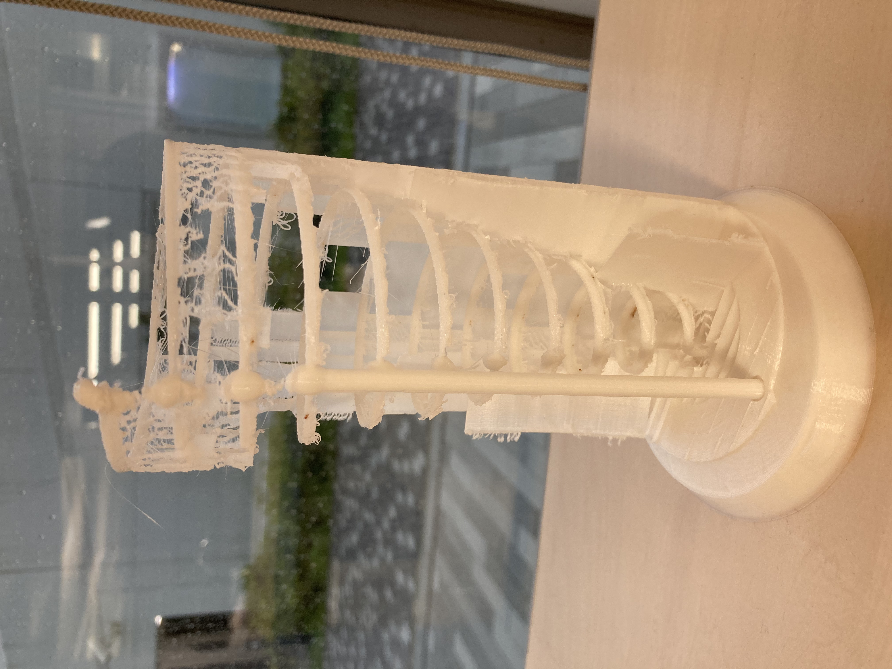

前回データだけ作っておいたペン立てを印刷しにラボへ

👆このカクカクのやつ
実際に印刷することを考えるとモデリングの際にも意識しなければならなここがあると学んだ。
＜意識すること＞
・サイズ間の意識（このペンたてでも印刷に24時間以上かかる）
・サポート（支えるために印刷されるモデリング時にはない部分）がつくこと
・重力で垂れてしまい真っ直ぐにならないこともある
・いきなりでは不安な時は一部分だけ印刷して様子を見ること
いろいろ直してこうなった⇩

シンプルに使い安いので学習机に置いてあります。
次に箸立てをモデリングしてみた

形状に不安があったのでまず一部分だけ印刷した。
細かいサポートが入りまくってとても外しづらそう。
→サポートの密度を調整
完全に印刷してみるとこうなった

(サポートを半分外した状態)とても汚いし、結局サポートを取りずらい
サポートのタイプを変えてみた。⇩
外から見る分にはそこそこ綺麗にできた、ただ中は汚い。
今後はサポートなしで作れるようなモノを意識していく。